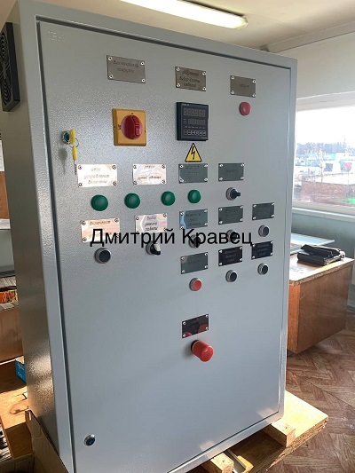
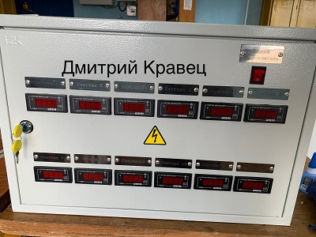
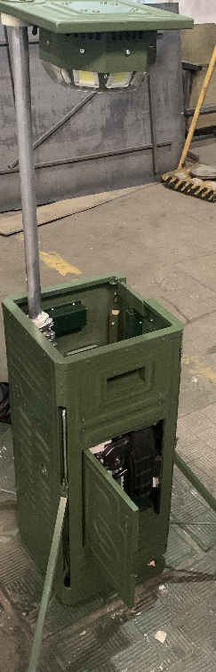
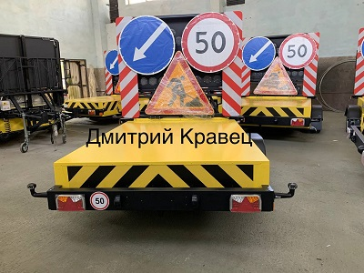
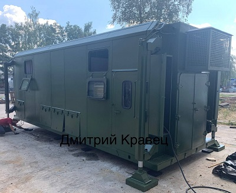
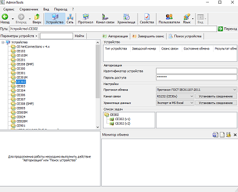

Гильотина с автоматической падачей металла.
Разработка схемы.
Составление спицификации.
Сборка и наладка.
Больше ФОТО
Данный шкаф позваляет в автоматическом режиме подавать установленное количество металла, обрубать и подавать сново до тех пор пока рулон металла не закончится.
Шкаф учета счетной группы.
Разработка схемы.
Составление спецификации.
Сборка, установка и наладка.
Больше ФОТО
Данный шкаф устанавливается около линии конвеера, конталерры с помщью кнопочного поста записывают знчиние сорта, брака и т.д.
Мобильное автономное осветительное устройство.
Разработка схемы.
Сборка выстовачного абразца и абразца для участка сборки.
Больше ФОТО
Является полностью автономным осветительным устройством, предназначено для освещения территории в ситуациях, при которых использование стационарных осветительных устройств затруднено, примером таких ситуаций могут быть аварийные работы, спасательные операции, либо иные ситуации при которых требуется создание освещённости в тёмное время суток.
С легкостью помещаятся в багажник автомобиля.
Мобильное прицепное демпферное устройство.
Сборка выстовочных абразцов и абразцов для участка сборки.
Предназначены для уменьшения последствий аварийных ситуаций на дорогах при столкновении транспортных средств с автомобилями дорожных служб. Они могут использоваться для круглогодичной работы в сцепке с наиболее распространенными моделями легких грузовых и грузопассажирских автотранспортных средств прикрытия дорожных служб во время проведения дорожно-ремонтных работ.
Сан. модуль.
Сборка, наладка.
Зарисовка схем с заранее собранных узлов и преведение их в читаемый вид.
Больше ФОТО
Данный модель предназначен для установки в местах учебных военных дийствий. Он оснащен 3 унитазами, 3 писуарами, 3 душами, 3 умывальниками, кондиционером, а также системой подагрева и отопления.
Модуль расчитан для эксплуатациии как в жаркое так и в сурово холодное время года.
Сан модуль работает от инвертора который преобразует нужное напряжени от установленных гелеевых аккумулятор,
по достижению 30% от емкасти АКБ заводиться дизель-генератор и работа продолжается от него при этом заряжаются АБК
по достижению 100% заряда дизель генератор глушиться в автоматическом режиме и ждет разряда акб.
Так же сан модель способен работать от внешней сети 380В.
OwenLogic.
Разработка программы для упровления програмируемым реле

Больше ФОТО
Разработка программы для работы пресса.
Разработка учебной программы (светофор).
AdminTols.
Больше ФОТО
Программа предназначена для работы со счетчиками Энергомер с подключением через оптопрт. Снятия показаний по заданному промежутку времени и числа, просмотра векторов и графиков...